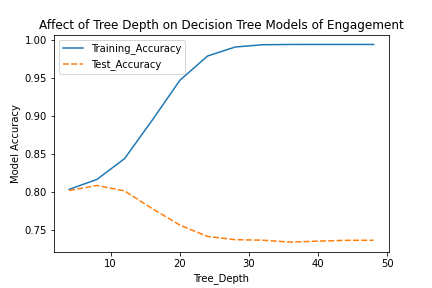

Modeling The Data With ML Methods
The first step toward modeling the data with machine learning is to decide what kind of algorithm to apply to the data. I'm skeptical of regression models
for this problem, because it seems overly ambitious for what I'm trying to do. Instead I decided to view this as a classification problem. In order to apply
a classification strategy I encoded two new columns (one in each of two datasets). The first, for average vote is called is_liked and has a value of 1 if the
movie has an average score greater than 6. Six is a reasonable value to use, because it is pretty close to the mean value for average score. The analogous column
for total votes, is is_outlier, which gets a value of 1 if the total number of votes the movie has is greater than 1.5*IQR + the median number of votes
(i.e. roughly 2250 votes).
I prioritized decision tree and random forest models, as these are relatively easily understood, and I know of ways to extract feature importance for them. Both
of these models work by separating populations based on variables. A decision tree uses features to make splits in the data, starting with an initial split (the root node)
and then through successive layers of nodes, with the goal of purifying two output conditions in the end nodes. The method uses gini impurity as a metric for how good a split is -
a gini of 0 would perfectly separate the conditions, where a split with a gini value of 0.5 is useless and separates the population such that half the members of the resultant nodes
are in one classification, and half are in the other.
Random forest is effectively the same thing as decision tree, but it has additional features that optimize the tree model. A random forest model constructs some number of
decision tree models, and then uses them to form an optimized tree.
Implementing and Tuning the Models
All the machine learning tools used in this work were imported from the Scikit-learn library of Python. In order to implement models, the data first needed to be processed.
A first processing step was to use the min/max scaler to scale the features, because year and duration had much different ranges than most of the other features. Two different
datasets were used in the implementation - the set used to predict is_liked contained 38 features, while the one used for is_outlier contained 40. Some features, such as
genre_complexity showed promise for the engagement prediction, but not the approval prediction, which is the reason for the different number. I optimized these models by
tuning the hyperparameters iteratively over a range that seemed reasonable. In particular, the tree depth parameter seemed important. Given an arbitrary tree depth, the
models could almost completely sort the training data, but comparisons with the test data showed this to be overfitting.

Overly large decision trees overfit the training data badly.
Results: Approval and Engagement are Somewhat Predictable
The best results I was able to obtain for audience approval came from random forest models. The random forest model with a tree depth of 16 and the default
100 estimator trees gave an accuracy of 0.709 on the testing set.
The best results I was able to obtain for audience engagement were better, and came from a simple decision tree model. The random forest models gave only modest
improvements in the audience approval data, and also significantly complicated the model for audience engagement. The best decision tree for engagement had a tree depth of 8, and
gave an accuracy of 0.808. More detailed results follow in the form of classification report tables.